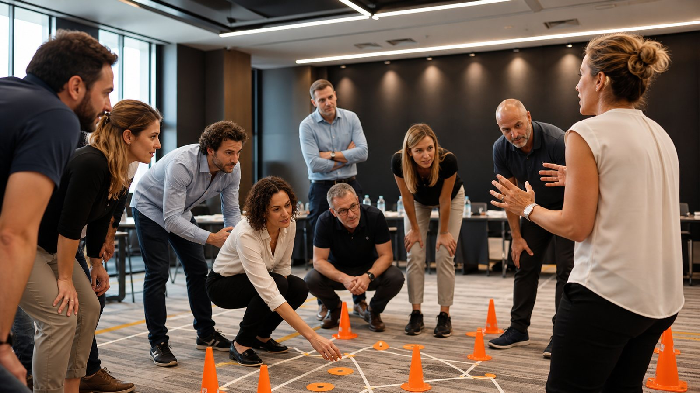
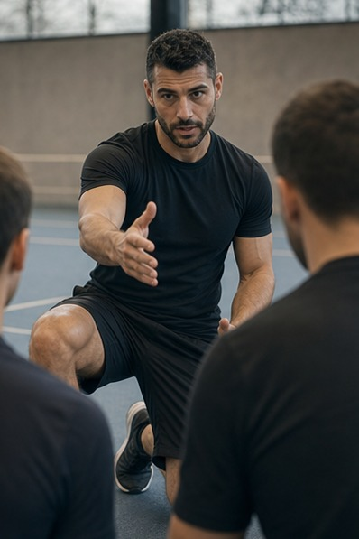

Stato di salute del team
Come leggere segnali deboli, clima, fiducia, comunicazione e responsabilita.
Osservatorio BeOx
Una raccolta editoriale pensata per HR, manager e imprenditori che vogliono trasformare formazione, team building e metafora sportiva in risultati concreti.
Aree editoriali
La struttura e pronta per articoli, guide e case history. Ogni contenuto potra approfondire un bisogno specifico e portare il lettore verso Team Check, contatto o richiesta percorso.
Come leggere segnali deboli, clima, fiducia, comunicazione e responsabilita.
Manager, ruoli, feedback e responsabilita condivisa nei team aziendali.
Come allenare lucidita, energia e gestione degli imprevisti.
Campioni, disciplina, errore, obiettivi e trasferimento nel lavoro.
In evidenza
Cinque contenuti editoriali gia pronti per lavorare su bisogni reali: Sport Academy, empowerment, team building formativo, stato di salute del team e performance con grandi campioni.
 Case history
Case history
Un percorso BeOx per Rossi Catering, Gruppo Serenissima Ristorazione, con grandi campioni e metafora sportiva per allenare competenze trasversali.
Leggi articoloUn contenuto per aziende interessate a sicurezza personale, assertivita, benessere, inclusione e parita di genere.
Leggi articolo
Team buildingUn approfondimento su metafora sportiva, learning by doing e debriefing come strumenti per allenare collaborazione, fiducia e responsabilita.
Leggi articolo Team Health
Team Health
Perche comunicazione, conflitto, stress, leadership e fiducia vanno osservati prima di scegliere un percorso formativo.
Leggi articolo
Sport AcademyCome la testimonianza sportiva, affiancata da formatori e specialisti, puo diventare apprendimento concreto per il team.
Leggi articoloVuoi partire dai dati?
Il Team Check aiuta a trasformare un bisogno generico in una prima lettura di priorita, aree fragili e possibili percorsi BeOx.
Compila il questionario e usa il report come base per una call di approfondimento con BeOx.
Vai all'AI Team Check